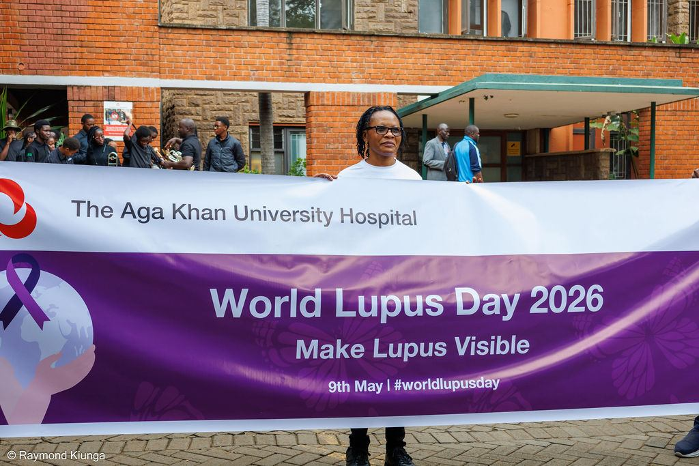
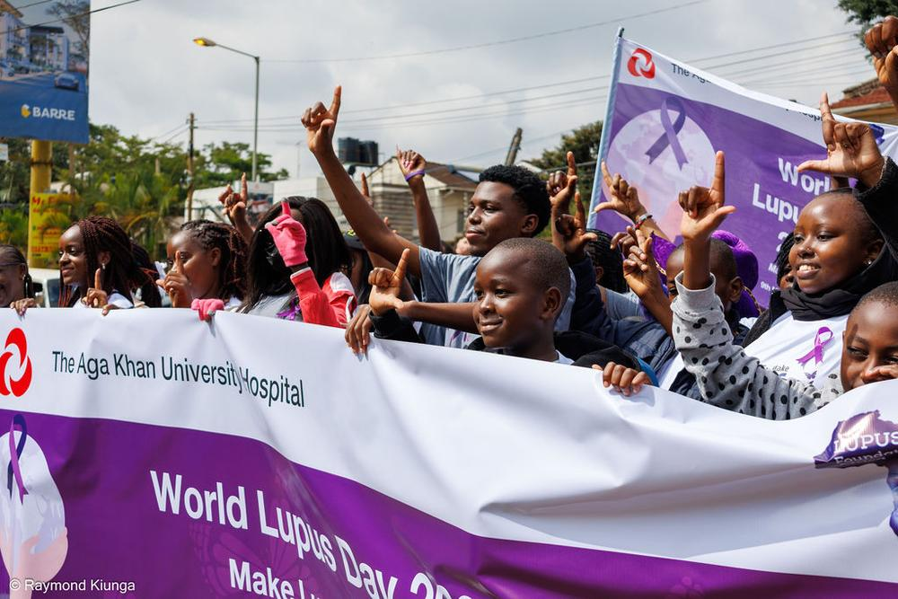
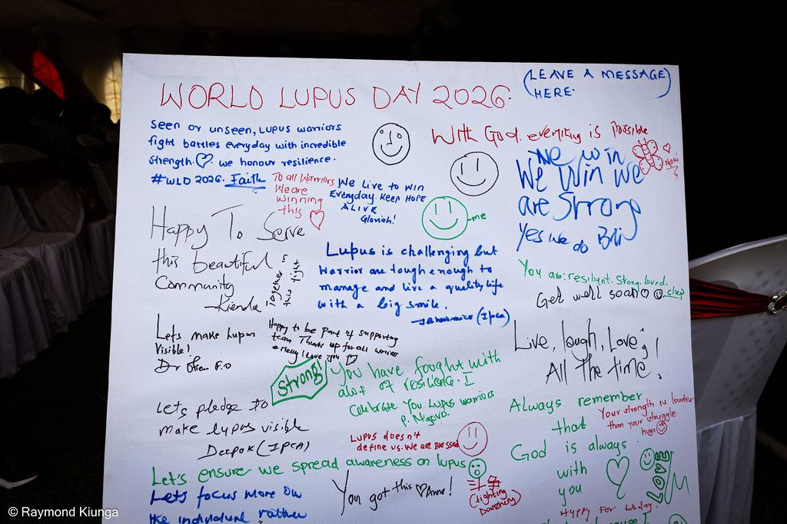

Wellness Day
A day focused on living well with lupus: movement, nutrition, rest, mental health and practical self-management.

Events & campaigns
Our events exist for one reason: so that people living with lupus in Africa are seen. Here is what we have been doing, and what is coming next.

For many people here, it was the first time they stood in a crowd where lupus did not need explaining.
World Lupus Day 2026, Nairobi. Photo: Raymond Kiunga.
Hundreds of warriors, caregivers, clinicians and partners walked through Nairobi under one message: Make Lupus Visible.
Hosted with the Aga Khan University Hospital, the day began with a community walk accompanied by a brass band, moving through the city with banners, flags and purple everywhere. It ended at the grounds with a wellness and education programme, a patient pledge wall, open sharing from warriors and caregivers, partner recognition, and a cake.
For many people who came, it was the first time they had stood in a crowd where lupus did not need explaining.
The day, in order
Morning
Warriors, caregivers, families, clinicians and partner organisations assembled in LFA and partner t-shirts, with the World Lupus Day 2026 banner at the front.
The walk
The community walked through the city behind the Make Lupus Visible banner, accompanied by a brass band. Purple flags, drums and chanting turned an ordinary street into a public conversation about lupus.
Midday
At the grounds, members wrote messages to one another on a public board: notes of hope, encouragement and promises to keep going. “We win, we are strong.”
Afternoon
Sessions covering living well with lupus, nutrition, mental health and navigating care, with open sharing from warriors and caregivers, and a panel bringing clinicians and patients into the same conversation.
Close
Partners who made the day possible were recognised, the community cut a cake together, and everyone gathered for one enormous group photograph.
New members joined from across the country, several chapters gained active participants, and media coverage carried the message far beyond the people who walked. The conversations started that day continue in our support groups and in our policy engagement.

“We win, we are strong.” Written by someone who had every reason not to believe it, and wrote it anyway.
The pledge wall. Photo: Raymond Kiunga.
Gallery
Look closely and you will see it: people who spent years being told they looked fine, refusing to be invisible for one day. Select any photograph to view it larger, and use the arrow keys to move through the gallery. All photography by Raymond Kiunga.
Our wider programme
World Lupus Day is our largest moment, but the work does not stop between Mays.
A day focused on living well with lupus: movement, nutrition, rest, mental health and practical self-management.
Smaller, regular gatherings across our chapters where members connect, share and support one another directly.
Including our visit to Kenyatta National Hospital, connecting patients, clinicians and the wider lupus community.
Policy engagement including meetings with the Social Health Authority on coverage for lupus diagnosis and treatment.
Awareness features and interviews with Citizen TV, NTV Kenya and KBC, carrying patient voices to a national audience.
Including nutrition education delivered with AAR Healthcare, promoting healthy living and holistic wellbeing.
Members hear about walks, meet-ups, wellness days and campaign actions first. Joining is free.